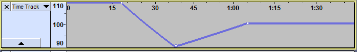
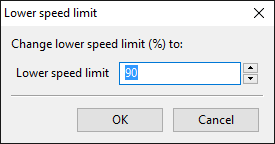
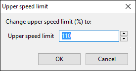
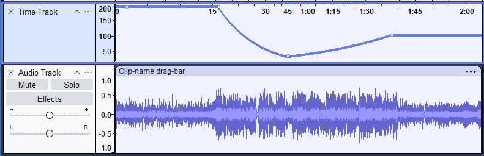

Time Tracks
- 
General method of use:
- Hover your cursor over the warp line until the envelope cursor
 appears, then click (and optionally, drag up or down) to create a control point.
appears, then click (and optionally, drag up or down) to create a control point. - To remove a control point, drag it outside the track, or use to undo envelope changes in sequence.
- By default you can warp playback speed by a maximum increase of 10% (110 on the vertical scale to left of the warp line) or a maximum decrease of 10% (90 on the vertical scale).
- To warp the speed by greater amounts, click in the name of the Time Track (in the panel that contains the downward pointing arrow) and choose "Set Range". Here you can specify the lower and upper speed limit of the vertical scale:
-  
Changing the range rescales the Time Track to the new limits, preserving the warp value of any envelope points that were there before. Having changed the range, you can now move the warp line up or down anywhere within the new upper or lower limit of the range.
- Only one Time Track can be used in a project, and it affects all audio tracks on screen.
- Time Track has no effect when audio is speed-adjusted using the Play-at-Speed slider in Play-at-Speed Toolbar.
Time Track Dropdown Menu

Clicking in the panel containing the downward-pointing triangle (to the left of the track) opens the Time Track Dropdown Menu containing display choices for the track:
- Name...: Displays the "Track Name" dialog where you can give the track a new name.
- Move Track Up: Moves the track up.
- Move Track Down: Moves the track down.
- Move Track to Top: Moves track to become the topmost track in the project.
- Move Track to Bottom: Moves track to become the bottom track in the project.
- Linear scale: Sets the vertical scale of Time Track to a linear display; this is the default.
- Logarithmic scale: Sets the vertical ruler to a logarithmic display.
- Range...: Opens dialogs where you can first set the minimum and then the maximum speed change value to be displayed on the vertical scale. Values are expressed in percentages relative to the "no change" value of 100%. Only integer values (whole numbers) can be set. The lowest speed change value that can be set is 10% and the highest speed change value that can be set is 1000% .
- Logarithmic Interpolation: The curve between control points is by default calculated using logarithmic interpolation. Uncheck this option to use linear interpolation between control points, so drawing an exactly straight line between points (assuming the vertical scale is set to "Linear").
Label tracks can also be moved up or down by clicking between the controls in the track's Track Control Panel then dragging upwards or downwards.
A Tutorial on Time Warping
- 
Key points about the image above:
- The Time Track curves are drawn with default display types (linear vertical scaling with logarithmic interpolation).
- The range of the vertical scale has been increased to a lower limit of 50 and an upper limit of 200.
- The horizontal ruler underneath the Timeline warps as you change the warp line. It shows when the speed-changed playback will reach each time point in the audio. Thus the green playback cursor moves faster or slower than normal as it moves along Time Track's horizontal ruler.
- In our example:
- we started playing twice as fast as normal
- we slowed down fairly suddenly to a speed twice as slow as normal
- then increased very gradually to a steady speed a little faster than the normal speed of 100%.
After all the changes, the resultant audio ends up with only a few seconds shorter playing time than it had before (about 3 minutes 42 seconds, where the end of the audio lies against the Time Track horizontal ruler).
Important Steps:
- You must first have at least one audio track to manipulate.
- Choose .
- If you want to warp the speed by more than plus or minus 10%, open the Time Track Dropdown Menu and choose Set Range.... The dialog will appear twice, the first time to choose the lower limit of the range and the second time to choose the upper limit of the range.
- For example if you set a Lower Speed Limit of 50%, you can make the audio play up to twice as slowly (an envelope point at the bottom of the Time Track would make the playback twice as slow, just like a Change Speed effect of -50%).
- If you set an Upper Speed Limit of 200%, you can make the audio play up to twice as fast (an envelope point at the top of the Time Track would double the playback speed, like a Change Speed effect of 100%).
- When you hover your cursor over the warp line, the cursor changes to the envelope cursor , which lets you shape the time warp line. Creating one envelope point only changes the speed of the whole track by the same amount, just like the Change Speed effect. To make a speed change that varies over time you must create at least one more point. Thereafter when you drag a point the line on each side of that point moves to reflect your change.
- You can press Space at any time to listen to how the warping sounds and change the points on the warp line further.
- If you wish to continue editing after completing your warp points, it is often advisable to click in the Track Control Panel of the audio track to select it (hold Shift and click to select multiple tracks) then . This writes the resampled audio data directly to the project rather than resampling the speed-changed audio back to the current sample rate in real-time. This may therefore make project playback more responsive.
- The quality setting of the resampling library used for playing or rendering Time Tracks is chosen automatically by Audacity. Therefore changing the converter quality settings in Quality Preferences will not affect Time Tracks.
- To use the speed-changed audio in other applications, choose , which opens the Export Audio Dialog.
| Time Track is always active (and therefore modifies audio speed when playing or exporting) whenever it is visible in the project. This applies even after rendering the audio. Therefore after render (or as soon as you want to work with audio that you do not want to speed-change), use the [X] "Close" button to left of the Time Track to remove it. |
| Older computers may be incapable of playing audio in real-time that makes use of a Time Track. However you can always export the file as a WAV and then play the WAV file later. |